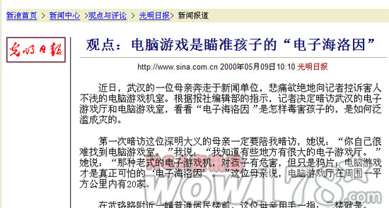
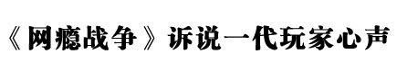

每个人的童年都或多或少有游戏的记忆，它组成我们生命中重要的一部分。
对很多人来说，中国的网络游戏产业或者说中国的游戏产业究竟从哪一年开始算没有一个标准，但对一个曾经历过中国游戏低谷的老玩家来说，有一件印象深刻的事可以作为标记.
2000年5月9日，光明日报一个叫夏斐的记者发表一篇<电脑游戏是瞄准孩子的电子海洛因>文章，文章中称，他在一夜之间学会了<星际争霸>和<英雄无敌3>两款游戏，并且在第二天无敌与网吧，击败了许多对手，由此获得了网吧里孩子们以及网吧老板的信任，才得到了他想得到的信息.按文章所说，该网吧老板曾对他说：玩游戏的孩子，"男的都变小偷，女的都变三陪小姐".
2000年的报道

现在10年已经过去，我这个玩过10年游戏的人依然没变成小偷，我们都知道这篇文章是在胡说八道.首先就他一夜之间学会的那两款游戏，任何一款也不是几天就能搞熟悉的，更不用说在网吧里称王了.其次我们都知道任何一个网吧老板也不会说出最后那种总结性的话.作者或许是真的去看了看那两款游戏，也的确去了个黑网吧见了几个孩子，然后就按照自己的意愿编造了这篇报道.
无论在当时还是现在，这都是篇荒唐透顶的文章，但如果大家在网上搜索一下该作者，就会看到：
2001年8月，《电脑游戏：瞄准孩子的“电子海洛因”》获第11届中国新闻奖（2000年度）通讯二等奖。这篇文章作为范文被选入人民大学高校统编教材“世纪新闻传播学系列教材”——《新闻写作教程》，编者给予高度评价。 2003年7月夏雨田系列报道获第13届中国新闻奖。作品《告别南极，不带走滴水片石》被收录进“九年义务教育六年制小学《语文》教科书”第十二册。 2003年9月被评为高级记者，是目前光明日报社最年轻的高级记者。 2004年2月被报社编委会提升为副局级站长。
............

其实，本来我这里没想放这部《网瘾战争》作为网页设计课期末作业的一部分。前面那篇《“电子海洛因”十年祭》覆盖面还算广，谁都有童年，现在八零后基本都是有游戏陪伴长大的，游戏的回忆肯定少不了。
但是，看《网瘾战争》的话，如果没有玩过魔兽世界的人，特别是对没有经历过九城和网易争夺魔兽世界代理权那段魔兽世界停服的日子的人来说，可能不会有那么深的情感在里面，也就不会有那么多的感动。
不过好在，里面有很多对二零零九年中国国内一些新闻事件的调侃。
比如， 欺实马（七十码）、钓鱼执法、南京彭宇案、临时性的即意犯罪、电视购物、暴风影音断网事件、瑞星和卡巴斯基误杀、谷歌涉黄事件、绿坝耗资4000万、正龙拍虎、秋雨捐书、九城竞业禁止合同、薇薇告全体员工书待岗协议、阶梯电价、被自杀、躲猫猫信春哥死后原地复活、心神不宁等。
(以上链接自维基百科，如若被墙，请自行谷歌.)
当然，对于电影中的部分可能敏感词也使用了“嘟”的声音进行“和谐”处理。
............